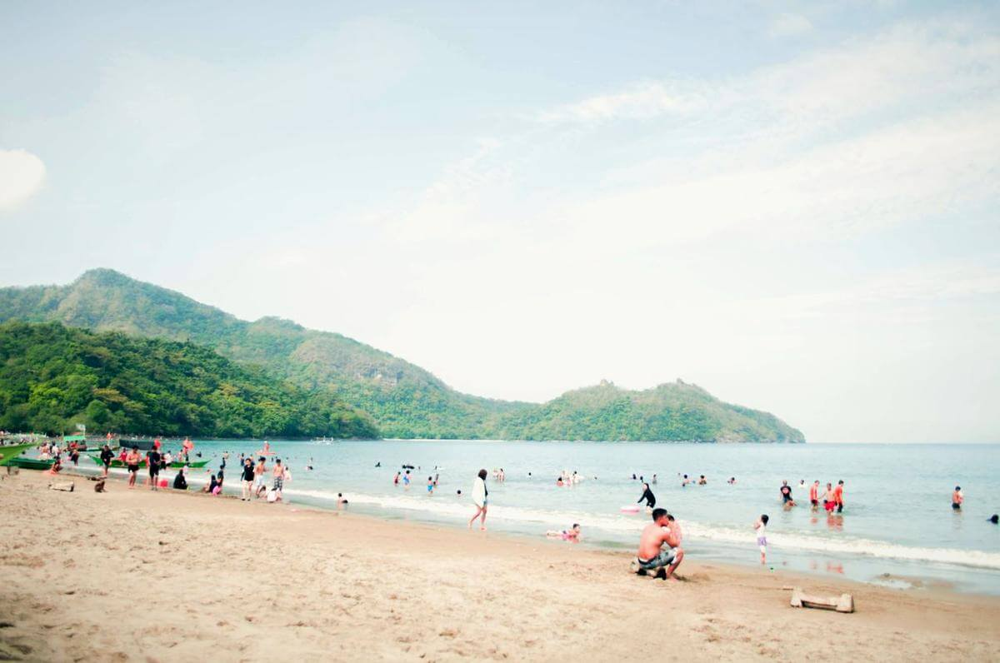

Nasugbu is best known for its big resorts, but along the coast near Patungan there are small coves you can only reach by boat. Papaya Cove is one of them. Visitors go there for a tent by the water, a slower pace and a boat trip to the neighbouring coves the next morning.
Getting there takes a little more effort than checking into a highway hotel. You drive or commute to the Patungan landing area, then cross by local boat. In return, you get a simpler kind of beach stay, with camping or glamping-style accommodation where available and a coastline that is easiest to explore from the water.
One thing to sort out first: the place goes by both Papaya Beach and Papaya Cove, and nearby resorts use similar names in their listings. Confirm the exact landing point and the property's location with your host before you leave. This guide covers what to expect there, the nearby coves, how to get there, what to pack and a simple two-day plan.

Papaya Cove at a glance
- Where: the Patungan coast of Nasugbu, Batangas
- Access: by road to Patungan, then by local boat
- Boat ride: often about 15 to 30 minutes, depending on route and sea
- Stay: camping and glamping-style setups, varying by property
- Nearby: Mother and Baby Elephant Coves, Taytayin and Santelmo Coves
- Best as: an overnight trip rather than a quick stop
What Kind of Place Is It?
Papaya suits people who like their beach trips outdoors. Accommodation has included camping and glamping-style setups, and facilities and rates change, so the place you saw online a few years ago may be different now. Do not expect the services of a large commercial resort.
Before you pay, ask your host about toilets, showers, electricity, phone signal, drinking water, meals, bedding, charging and check-in times. The answers will tell you what to bring and whether the stay suits your group. What you get in return is the setting: a beach, little to do, and a boat ready to take you exploring.
Things to Do
Spend a day on the beach
The simplest plan is the right one. Swim where the local staff say it is safe, keep an eye on the tide and stay off the rocks when the waves pick up. If your booking does not include shade or water, bring both.
Camp or glamp
Depending on the property, you may be able to book a furnished tent, rent camping gear or pitch your own under the site's rules. Check what the rate includes. Glamping often covers bedding and some furniture, while a campsite may charge separately for tent rental and use of facilities. Ask for a current written quote instead of relying on old prices from social media.
Go cove hopping
The coves along this stretch are the main reason to plan a boat trip. Mother Elephant Cove, Baby Elephant Cove, Taytayin Cove and Santelmo Cove are the usual names, and the actual route depends on the weather, the sea, local rules and your boatman.
Taytayin is known for cliff jumping, and Santelmo is described as a marine sanctuary. Neither is for everyone. Jump only if the operator confirms the site is open and safe that day, and behave in the sanctuary as you would anywhere fragile: no touching coral, no chasing fish.
Snorkel when conditions allow
Some coves have clear water with fish to see. Bring your own mask if you have one that fits, or ask whether the boat has gear. Do not stand on the reef, collect shells or follow the marine life too closely.
Slow down
Papaya is a good place to do very little: read, walk the shore, watch the light change and enjoy a night without city noise. If you are coming as a group, plan meals and supplies before you cross so nobody has to go back to the mainland for snacks.
The Coves Nearby
- Mother and Baby Elephant CovesDistinctive rock shapes that often appear on local boat routes.
- Taytayin CoveKnown for cliff jumping. Check access, depth and conditions with the operator, and never jump without local clearance.
- Santelmo CoveA marine sanctuary. Follow conservation rules and leave everything where it is.
- Patungan landing areaThe mainland jumping-off point where boat transfers are arranged.
Treat this as a list of possible stops, not a promise. Not every cove is open to the public on every day, and not every boat goes to all of them.
How to Get to Papaya Cove
By car
Ternate–Nasugbu road
From Metro Manila, drive through Cavite onto the Ternate–Nasugbu coastal road, go through Kaybiang Tunnel and continue to Patungan. Travel time depends heavily on traffic.
By commute
Bus to Nasugbu, then a local ride
Take a Nasugbu-bound bus and arrange onward transport to Patungan. Ask your host whether they can book a tricycle from the nearest drop-off.
By boat
Patungan to the cove
Usually around 15 to 30 minutes, depending on where you leave from, where you land and the sea.
Before you board, agree on these points with the boatman or your host:
- Pick-up and drop-offThe exact landing points on both sides.
- FaresOne-way and return rates, and whether the coves are included.
- LimitsPassenger numbers and how much baggage you can bring.
- The returnWhether the boat waits or comes back at a set time.
- Bad weatherWhat happens to the booking and the money if trips are cancelled.
- Local feesAny registration or environmental charges.
Do not count on finding a boat back on the spot. Fix the return before you leave the mainland, and keep valuables out of sight in a parked car.
A Two-Day Plan
- Day 1Cross and settle in
Leave Manila early, meet your boat at Patungan, cross, check in, then spend the afternoon on the beach and the night by the water.
- Day 2Coves and home
Breakfast, a morning boat loop to the coves if the sea allows, back to pack and check out, then the agreed transfer to Patungan and the drive home.
If you want to visit several coves, agree on the route and how long the trip will take well before the morning of the trip.
What to Pack
Pack for a boat trip and limited facilities: cash for boats, food and fees; drinking water and snacks; a dry bag for your phone and documents; sandals with good grip; sunblock, a hat and light clothes; insect repellent; toiletries and a small towel; a power bank; any medication you need; and a change of clothes sealed in a waterproof bag. If you are camping, confirm whether a tent, mattress, bedding, lights and a cooking area are provided, and bring only what is missing.
When to Go
The drier months are easier for both the beach and the boat crossing, but the sea can still turn rough and boatmen will cancel trips when it is unsafe. Do not book a tight connection on the day you leave. During the rainy season or with a storm approaching, check the advisories and be ready to move your dates. Weekends and holidays bring more people, and a weekday trip is usually quieter if rooms and boats are available.
Travel Responsibly
Good habits
- Book with verified hostsUse providers whose current contact details you can check.
- Get the full priceBoats, fees, camping or day use and cove stops, all in one quote.
- Take your trash backCarry rubbish to the mainland or use the proper bins.
- Wear the life jacketOn every crossing, and listen to the boat crew.
- Respect private landSome coves and beaches are privately or locally managed.
- Watch the kidsEspecially near rocks and in the water.
Want more Batangas after the beach? Divers can head to Anilao, and the town of Balayan has its own famous Parada ng Lechon each June.
Frequently Asked Questions
Is Papaya Cove in Nasugbu?
Yes. It is on the Nasugbu coast in Batangas and is usually reached by boat from the Patungan area.
How do I get there?
Go by road to Patungan, then take a local boat. Confirm the landing point and transfer details with your host first.
Can I camp at Papaya Cove?
Camping and glamping-style stays have been offered, but facilities and rates vary by property. Ask what is included and whether you can bring your own tent.
What is there to do nearby?
Boat trips to Mother Elephant Cove, Baby Elephant Cove, Taytayin Cove and Santelmo Cove, depending on access and the sea.
Can I do it as a day trip?
It is possible, but the drive and the boat make an overnight stay much more relaxed. For a day trip, confirm the boat times in both directions.
Photo credit: Pexels.


Comments
No comments yet. Been here recently? Share a tip or ask a question.
Leave a Reply